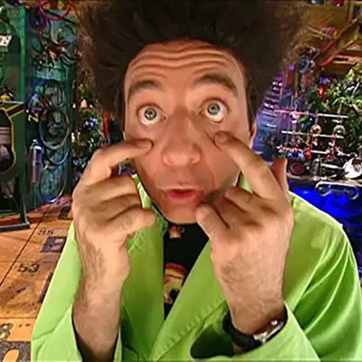

Aquí se aprende tocando.
Mapas, juegos y experimentos para estudiar la ESO con las manos. No hay que conectar nada ni crear una cuenta: elige una asignatura y a trastear.
Asignaturas

Historia
Cuándo y dónde, sí. Pero sobre todo por qué pasó, a quién le cambió la vida y qué queda hoy.
5 recursos · 2º ESO
Matemáticas
El porqué de cada paso.
Próximamente
Ciencias
Mirar el mundo y preguntarle cosas.
Próximamente
Lengua y Literatura
Entender lo que lees y decir lo que piensas.
PróximamenteTodos los recursos

Ponte a prueba: el inicio de la Edad Media
Repaso para el examen: las 12 preguntas del tema, conceptos, ordenar los hechos, causas y cuadros para completar, con las respuestas de Beakman y un simulacro de examen para hacer con él en Claude.
- Para qué sirve
- Fijar el tema recordando sin mirar, que es lo que de verdad se queda, y saber qué partes faltan por repasar antes del examen.
- Cómo lo hace
- Práctica de recuperación: primero contestas tú y luego comparas. Marcas cada pregunta como sabida, a medias o no sabida, y vuelves solo a las que fallan. Sigue el Tema 1 de Vicens Vives (Madrid).

Cronomapa de la Edad Media
Mueve la barra del 476 al 1492 y mira qué reinos, ciudades y batallas coincidieron en el tiempo. Cada acontecimiento cuenta qué cambió, al poco y a la larga.
- Para qué sirve
- Ver qué existía a la vez, que es lo que más cuesta de la Edad Media. Situar cada reino, ciudad y batalla en el mapa y en el tiempo, y entender cómo un acontecimiento lleva al siguiente.
- Cómo lo hace
- Aprender explorando: el tiempo lo mueves tú. En diez paradas Beakman te hace una pregunta para pensar antes de ver la pista. Cada acontecimiento explica sus consecuencias en la gente, la política, el arte y la cultura, y las palabras difíciles tienen su explicación al pasar el ratón.

Los mapas de al-Ándalus
Casi 800 años en seis mapas: la conquista, el emirato, el califato, los taifas, almorávides y almohades, y el reino nazarí de Granada.
- Para qué sirve
- Entender cómo se formó y cómo fue encogiendo al-Ándalus, y qué causas explican cada cambio.
- Cómo lo hace
- Antes de pasar de un mapa al siguiente, Beakman pregunta qué pasó entre los dos. Al final, un juego: reconocer cada etapa en un mapa sin nombres.

¿Qué dicen las palabras?
Un juego con las palabras que el español heredó del árabe: descubre cuáles vienen de al-Ándalus y cuáles solo lo parecen, clasifícalas por ámbitos y averigua por qué tantas empiezan por «al».
- Para qué sirve
- Resolver el reto del tema («¿Qué dicen las palabras sobre nuestro legado andalusí?») y saber explicar el legado de al-Ándalus: regadío y cultivos nuevos, comercio y ciencia.
- Cómo lo hace
- Tarjetas de sí o no con el origen de cada palabra, clasificación con corrección, un mini reto sobre el artículo «al» y la conclusión de Beakman.

Me pongo en su mentalidad
Seis personas del inicio de la Edad Media: un artesano que huye al campo, una comerciante de Constantinopla, un monje copista, una vecina de Toledo en el 711, un mercader del zoco de Córdoba y una campesina de una alquería. Elige una y escribe en su piel.
- Para qué sirve
- Practicar la actividad «Me pongo en su mentalidad» del libro: usar datos ciertos de la época para imaginar qué veía, qué temía y qué le importaba a alguien que vivió entonces.
- Cómo lo hace
- Situación, tres preguntas guía y una chuleta de datos; el texto se guarda en el ordenador y un botón lo copia para que Beakman lo revise en Claude, con una persona adulta al lado.
¿Te atascas con un tema? Los tutores de Beakman te lo explican con preguntas, sin hacerte los deberes.
Los tutores de Beakman